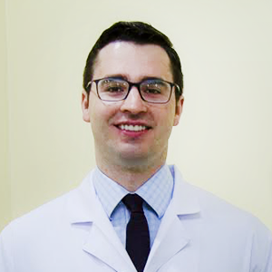
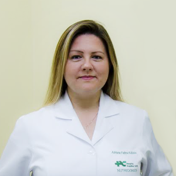

Conheça os médicos que tem um compromisso com a sua saúde.

Pedro Henrique CaronCirurgião
Membro da Sociedade Brasileira de Cirurgia Bariátrica e Metabólica;
Membro da Sociedade Brasileira de Videocirurgia (SOBRACIL);
Especialista em Cirurgia do Aparelho Digestivo pela AMB e Membro do Colégio Brasileiro de Cirurgia Digestiva;
Especialização em Cirurgia do Aparelho Digestivo no Hospital Beneficência Portuguesa de São Paulo (equipe ProGastro).
Residência em Cirurgia Geral no Hospital Angelina Caron;
Graduado em Medicina pela Universidade Positivo
Fabiola Seko KayCirurgiã
Membro da Sociedade Brasileira de Cirurgia Bariátrica e Metabólica;
Fellowship em Cirurgia Bariátrica no Hospital Angelina Caron;
Residência em Cirurgia Geral no Hospital Angelina Caron;
Graduada em Medicina pela Pontifícia Universidade Católica do Paraná.
Eduardo Bastos AlexandreCirurgião
Membro da Sociedade Brasileira de Cirurgia Bariátrica e Metabólica;
Membro da Sociedade Brasileira de Videocirurgia (SOBRACIL);
Especialista em Cirurgia do Aparelho Digestivo pela AMB e Membro do Colégio Brasileiro de Cirurgia Digestiva;
Especialização em Cirurgia do Aparelho Digestivo no Hospital Beneficência Portuguesa de São Paulo (equipe ProGastro).
Residência em Cirurgia Geral no Hospital Angelina Caron;
Graduado em Medicina pela Universidade Positivo
Dra. Alissandra Ferreira de Lima MalveziPsicóloga
Graduação em Psicologia na Pontifícia Universidade Católica do Paraná;
Especialização em Psicologia Clinica e Psicanalise na Pontifícia Universidade Católica do Paraná;
Chefe do Serviço de Psicologia da Digegastro Caron;

Dra. Adriane F. KulibabaNutricionista
Nutrição pelo Centro Universitário Campos de Andrade, Especialização em Obesidade e Emagrecimento pela Universidade Veiga de Almeida;
Chefe do Serviço de Nutrição da Digegastro Caron;
Dr. Leonardo PrecomaCardiologista
Possui graduação em Medicina pela Pontifícia Universidade Católica do Paraná(2012);
Residência em clínica médica pela sociedade hospitalar Angelina Caron - PR e cardiologia pelo Instituto do coração InCor da Faculdade de Medicina da Universidade de São Paulo (Incor - FMUSP);
Título de especialista em cardiologia (SBC);
Membro da sociedade de cardiologia do estado de São Paulo (SOCESP).
Atua na área de pesquisa clínica com ênfase em cardiologia no Hospital Angelina Caron
Assistente e preceptor da especialidade de Cardiologia do Hospital Angelina Caron
Dr. Leonardo SatoEndoscopista
CRM 28485;
Membro Titular da Sociedade Brasileira de Endoscopia Digestiva (SOBED);
Membro Adjunto do Colégio Brasileiro de Cirurgiões (CBC);
Membro Associado da Sociedade Brasileira de Cirurgia Bariátrica e Metabólica (SBCBM);
Especialização em Endoscopia Digestiva no Hospital Sugisawa;
Residência Médica em Cirurgia Geral no Hospital Santa Casa de Curitiba;
Graduado em Medicina pela Pontifícia Universidade Católica do Paraná;/li>
Dr. Malcoml SugisawaEndoscopista
Formação acadêmica na Pontifícia Universidade do Paraná;
Residência em Cirurgia Geral no Hospital Angelina Caron;
Especialização em Endoscopia Digestiva no Hospital Sugisawa;
Dr Celio HasegawaEndoscopista
CRM 14773;
Membro Titular da Sociedade Brasileira de Endoscopia Digestiva (SOBED);
Especialista em Gastroenterologia pela Federação Brasileira de Gastroenterologia (FBG);
Especialização em Endoscopia Digestiva no Hospital Sugisawa;
Residência Médica em Cirurgia Geral no Hospital Santa Casa de Curitiba;
Graduado em Medicina pela Pontifícia Universidade Católica do Paraná;